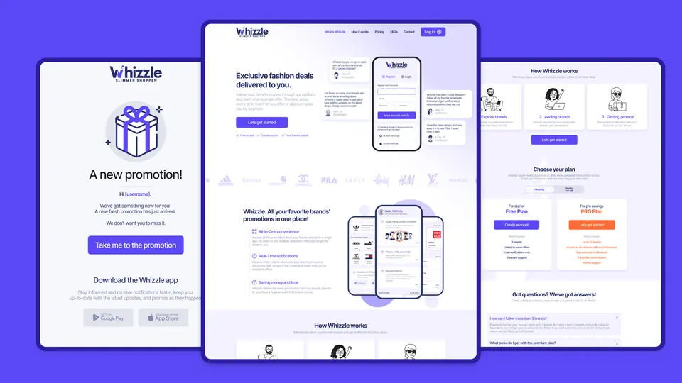
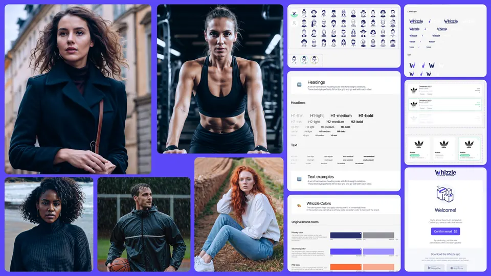

02 — Branding · Product Design
Whizzle
A deal-tracking app based in Amsterdam brought me in to redesign its logo. Within a month my product judgement was shaping decisions well beyond visuals, and the project became a two-year partnership covering brand, product, design system and marketing.

Overview
Whizzle follows official brand sites and retailers and alerts shoppers when the products they care about go on sale, starting with high-end goods. Users could follow five brands for free and pay to follow more. When the team brought me in, the app had a working engine behind it but no coherent identity or product design.
What started as a logo redesign grew into a two-year partnership where I owned the whole design and brand side of the product: strategy and structure, personas and user flows, the design system, the iPhone and web apps, the bilingual marketing website, and every newsletter and graphic that went out under the Whizzle name. My partner owned the technology.
Challenge
- 01The early identity leaned on loud colours that didn't suit a premium product aimed first at Northern Europe — the logo and brand needed rethinking, with a complete system built behind them.
- 02The product needed to work as a native iPhone app, a responsive web app, and a marketing site, in both English and Dutch.
- 03Light and dark mode had to be supported natively across every screen, not patched on afterward.
- 04As an external designer, I had to earn the trust to make product decisions without daily oversight.
Process
Everything ran through a detailed discovery phase and ongoing Miro sessions, where client insights, user personas and product requirements were tracked openly so nothing got lost between meetings. Weekly meetings kept milestones honest and delivery on schedule — that consistency, more than anything, is what turned a freelance engagement into a long-term partnership.
Scope & workflow
A workflow map set the plan from the first step: logo restyling, basic brand guidelines, user persona and research, then the website UX/UI with fonts, colour palette, icons and imagery. Finished, planned and optional work were marked separately, so scope stayed clear.

Website & emails
A marketing website that explains the product in three steps — explore brands, add brands, get promos — with free and PRO plans and an FAQ, plus transactional emails that announce each new promotion with one clear call to action.

A logo redesign that became a two-year partnership.
App & dashboard
The iPhone app and the responsive web dashboard share the same components: pick your brands, follow active promos and upgrade to PRO — localised in Dutch for the first market.

System & campaign
Behind the product sits the design system: avatars, type scale, colour and logo variations, and email components. On top of it, a campaign image direction gave the brand a human face.

Solution
A complete, living brand and product system: logo and brand book, a full Figma design system built on atomic design principles, native iPhone and responsive web apps in light and dark mode, a bilingual marketing website, and the newsletters and marketing graphics that launch every new promotion.
Key decisions
- 01No intrusive advertising: it would have made Whizzle feel like the products it wanted to stand apart from, so we chose a freemium model — five brands free, more on subscription.
- 02A rebrand for Northern Europe: I moved the identity away from loud colours to calm, neutral tones, so the product reads as premium and trustworthy to its first market.
- 03Not launching: after testing, we decided together not to release publicly — similar tools already existed and we chose not to put more money at risk.
Looking back
I'd ship a minimum viable version earlier, instead of polishing everything first, to test demand sooner and spend less on perfecting what the market might not need.
Impact
We showed the app to roughly 400 people, mostly in our early-adopter circle across the Netherlands, Belgium, Germany and Switzerland — an informal validation, not a controlled study. Around 350 responded positively, calling it intuitive and liking its look and feel; about 50 gave detailed feedback that we used to improve the user flow and shape the subscription model. The app never reached a public launch.